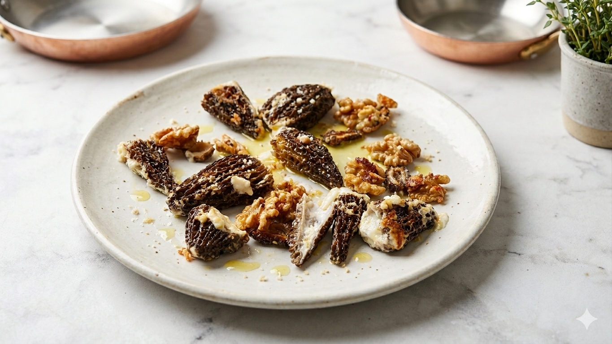

Kuzu göbeği mantarının karakteristik topraksı tadının, İzmir tulumunun keskin aroması ve labnenin yumuşak dokusuyla harmanlandığı rafine bir lezzet.

Malzemeler
Ana Protein ve Sebzeler
7-8 adet orta boy kuzu göbeği mantarı
1 çorba kaşığı İzmir tulum peyniri
1 çorba kaşığı (biraz fazla) labne peyniri
Sos, Yemiş ve Eşlikçiler
5-6 adet yarım ceviz içi
1 diş öğütülmüş sarımsak
1 çorba kaşığı tereyağı
Taze çekilmiş karabiber
Hazırlanış
1. Labne peyniri, İzmir tulumu ve öğütülmüş sarımsağı bir kapta homojen bir harç haline gelene kadar karıştırın.
2. Kuzu göbeği mantarlarının alt kısımlarını, peynir dolgusunu kolayca içine alabilecek şekilde kesin.
3. Hazırladığınız peynir karışımını mantarların iç boşluklarına doldurun.
4. Bir tavada tereyağını eritin. Mantarları tavaya dizip her yüzünü çevirerek orta ateşte 8-10 dakika pişirin.
5. Pişirme işleminin son 2 dakikasında cevizleri tavaya ekleyin ve mantarların aromasıyla hafifçe kavrulmasını sağlayın.
6. Mantarları tabağa alın. Kalan cevizleri tavada kısa bir süre daha harlı ateşte tutup, üzerlerindeki yağla birlikte mantarların üzerine gezdirin.
Notlar
• Kuzu göbeği mantarları mutlaka tam pişirilmelidir; çiğ tüketimi mide hassasiyetine yol açabilir.
• İzmir tulumunun tuzu yeterli olduğu için harca ekstradan tuz eklenmesi önerilmez.
• Cevizlerin acılaşmaması için pişirme süresinin sadece sonunda tavaya dahil edilmesi kritiktir.
Kalori Tablosu (Tek Kişilik)
Bileşen
Miktar / Detay
Kalori (kcal)
Kuzu Göbeği Mantarı
7-8 adet (~100g)
~31
İzmir Tulum Peyniri
1 çorba kaşığı (~15g)
~48
Labne Peyniri
~25g
~50
Tereyağı ve Ceviz
1 yk yağ + 6 yarım ceviz
~190
TOPLAM
Tek Kişilik Porsiyon
~319 kcal
Sağlık Değerlendirmesi
D Vitamini ve Protein: Mantarın sağladığı bitkisel protein ve D vitamini, peynirlerin kalsiyumu ile birleşerek besleyici bir öğün oluşturur.
Sağlıklı Yağlar: Cevizden gelen Omega-3 yağ asitleri, sarımsağın antioksidan etkisiyle birleşerek damar sağlığına katkı sağlar.
Lezzet Değerlendirmesi
Tat Dengesi: İzmir tulumunun keskinliği ve labnenin kremsi hafifliği, kuzu göbeğinin topraksı umami tadını ön plana çıkarır.
Gastronomik Deneyim: Harlı ateşte son dokunuşu yapılan cevizlerin çıtırlığı, mantarın elastik dokusuyla damakta zengin bir kontrast yaratır.